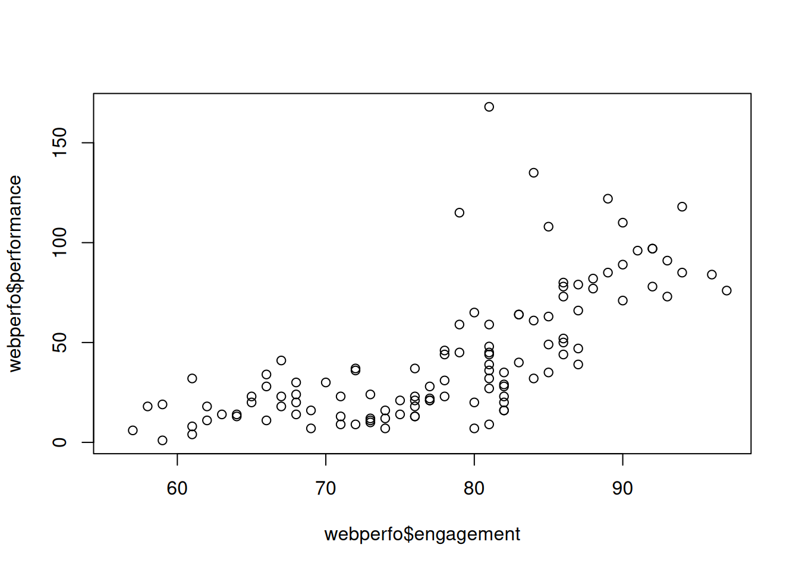
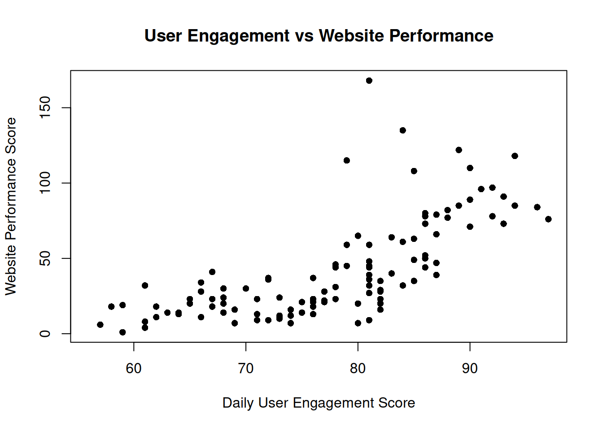
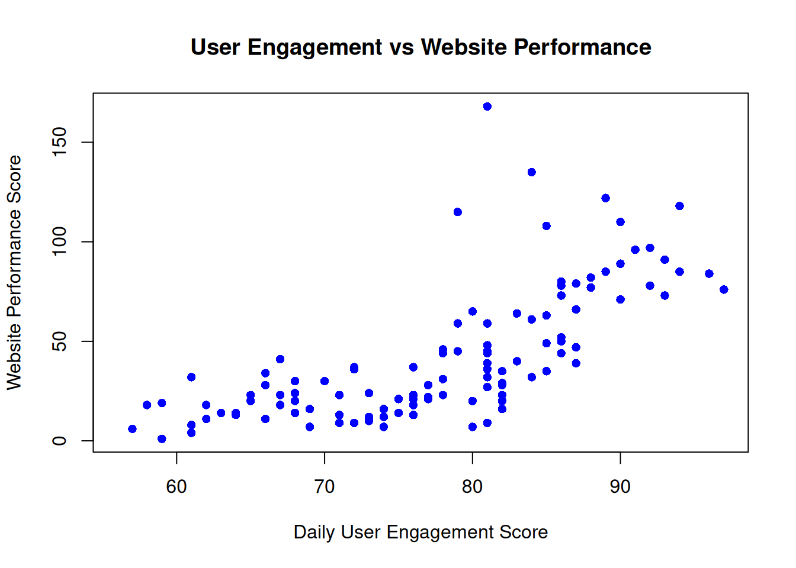
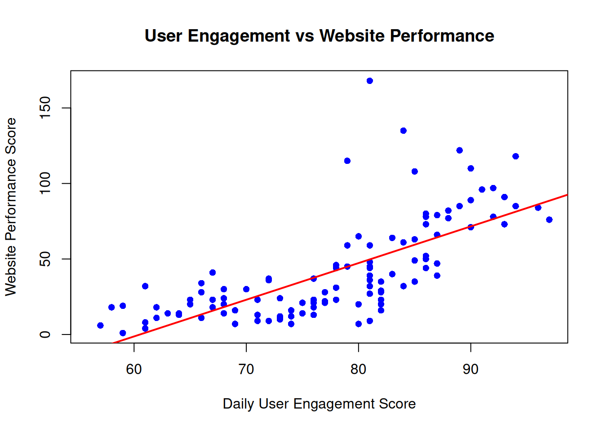

Below are two example projects from my coursework that use R for business analytics and data exploration.
In this project, I created a sample regional_sales dataset to practice business analytics. The data tracks revenue and customers across four regions (North, South, East, West) and four quarters. I used R to inspect the structure, summarize key metrics, and identify high- and low-performing regions and periods.
Key Skills Demonstrated:
-Creating and working with data frames in R
-Using functions like str(), summary(), unique(), and aggregate()
-Identifying high-performing regions and quarters based on revenue and customers
-Calculating total and average values to support business insights
-Explaining results in clear, business-focused language
Create sample regional sales data
regional_sales <- data.frame(
region = c("North", "South", "East", "West", "North", "South", "East", "West",
"North", "South", "East", "West", "North", "South", "East",
"North", "South","North"),
quarter = c(rep(c("Q1", "Q2", "Q3", "Q4"), each = 4), "Q4", "Q4"),
revenue = c(125000, 98000, 115000, 102000,
138000, 105000, 128000, 118000,
142000, 89000, 135000, 125000,
155000, 112000, 148000, 165000,
120000, 91250),
customers = c(450, 380, 420, 395,
485, 415, 465, 445,
520, 350, 485, 470,
575, 425, 545, 590, 435,324)
)str(regional_sales)## 'data.frame': 18 obs. of 4 variables:
## $ region : chr "North" "South" "East" "West" ...
## $ quarter : chr "Q1" "Q1" "Q1" "Q1" ...
## $ revenue : num 125000 98000 115000 102000 138000 105000 128000 118000 142000 89000 ...
## $ customers: num 450 380 420 395 485 415 465 445 520 350 ...Number of observations: 18
Number of variables: 4
Variables and data types of each variable: region, Character (chr), Region name (e.g., “North”, “South”) quarter, Character (chr), Quarter of the year (e.g., “Q1”, “Q2”) revenue, Numeric (num), Revenue in dollars customers, Numeric (num), Number of customers
summary(regional_sales)## region quarter revenue customers
## Length:18 Length:18 Min. : 89000 Min. :324.0
## Class :character Class :character 1st Qu.:106750 1st Qu.:416.2
## Mode :character Mode :character Median :122500 Median :447.5
## Mean :122847 Mean :454.1
## 3rd Qu.:137250 3rd Qu.:485.0
## Max. :165000 Max. :590.0Range of revenue: $89,000 - $165,000
head(regional_sales)## region quarter revenue customers
## 1 North Q1 125000 450
## 2 South Q1 98000 380
## 3 East Q1 115000 420
## 4 West Q1 102000 395
## 5 North Q2 138000 485
## 6 South Q2 105000 415Regions in the first few rows: North, South, East, West
unique(regional_sales$region)## [1] "North" "South" "East" "West"unique(regional_sales$quarter)## [1] "Q1" "Q2" "Q3" "Q4"4 Regions (North, South, East, West) 4 Quarters (Q1. Q2, Q3, Q4)
sum(regional_sales$customers)## [1] 8174This total shows that across all regions and quarters, the business served 8,674 customers in total.This reflects overall customer engagement or market reach during the reporting period. Comparing this number with total revenue could show an average revenue per customer, helping assess customer value and efficiency. Tracking this total over time can also show growth trends in customer base and help identify strong-performing regions or quarters.
sum(is.na(regional_sales))## [1] 0There are no missing values in the dataset. In a real business scenario missing values can lead to incorrect calculations causing data inaccuracy. It can be misleading because having missing values would be an incomplete dataset. Also identifying missing data early helps to decide whether to remove or investigate the cause.
table(regional_sales$region)##
## East North South West
## 4 6 5 3table(regional_sales$quarter)##
## Q1 Q2 Q3 Q4
## 4 4 4 6The data is not evenly distributed across regions or quarters. The North appears six times, while the West appears only three times. Q4 has six records, compared to four in each of the other quarters. This suggests the North is probably the busiest region, and the West may have fewer sales or less reporting. Q4 might be busier because it falls at the end of the year, during the holidays. Since the data is uneven, it could affect the results. Regions or quarters with more data might make the numbers seem higher or lower than they actually are.
regional_sales[regional_sales$revenue < 90000, ]## region quarter revenue customers
## 10 South Q3 89000 350South Region Q3 shows 89000 revenue and 350 customers.
regional_sales[regional_sales$revenue > 140000, ]## region quarter revenue customers
## 9 North Q3 142000 520
## 13 North Q4 155000 575
## 15 East Q4 148000 545
## 16 North Q4 165000 590high_perf <- regional_sales[regional_sales$revenue > 140000, ]
nrow(high_perf)## [1] 4Regions North and East achieved high performance.There are 4 high-performance records.
regional_sales[regional_sales$quarter == "Q4" &
regional_sales$revenue > 130000 &
regional_sales$customers > 500, ]## region quarter revenue customers
## 13 North Q4 155000 575
## 15 East Q4 148000 545
## 16 North Q4 165000 590This combination suggests that year-end sales were particularly strong in certain regions. This could be due to seasonal demand (e.g., holidays or promotions), effective regional strategies or marketing, or strong customer engagement and retention.
# Filter for North OR East regions
north_east <- regional_sales[regional_sales$region == "North" |
regional_sales$region == "East", ]
# Calculate average revenue for North and East
mean_NE <- mean(north_east$revenue)
# Calculate overall average revenue
mean_all <- mean(regional_sales$revenue)
# Display both results
mean_NE## [1] 134225mean_all## [1] 122847.2The average revenue for the North and East regions ($134,225) is higher than the overall average revenue ($122,847.20). The North and East regions are performing above average, bringing in more sales than the company’s average performance.
# Create a performance flag
regional_sales$low_perf <- regional_sales$revenue < 100000 |
regional_sales$customers < 400
# Count how many records are flagged
sum_low <- sum(regional_sales$low_perf)
# Calculate the percentage of total records
perc_low <- (sum_low / nrow(regional_sales)) * 100
# Display both results
sum_low## [1] 4perc_low## [1] 22.22222Number of concerning records: 4
Percentage of total records: 22.22%
# Calculate total revenue by region
total_rev_by_region <- aggregate(revenue ~ region, data = regional_sales, sum)
# Display results
total_rev_by_region## region revenue
## 1 East 526000
## 2 North 816250
## 3 South 524000
## 4 West 345000The North region generated the highest total revenue.
# Calculate average customers by quarter
avg_customers_by_quarter <- aggregate(customers ~ quarter, data = regional_sales, mean)
# Display results
avg_customers_by_quarter## quarter customers
## 1 Q1 411.2500
## 2 Q2 452.5000
## 3 Q3 456.2500
## 4 Q4 482.3333Q4 has the highest average customer count, meaning people are buying more at the end of the year. This typically happens because of the holidays and year end sales promotions.
# Total revenue across all regions and quarters
total_revenue <- sum(regional_sales$revenue)
# Average revenue per quarter
avg_rev_per_quarter <- aggregate(revenue ~ quarter, data = regional_sales, mean)
# Number of high-performance records (revenue > $140,000)
high_perf_count <- sum(regional_sales$revenue > 140000)
# Display results
total_revenue## [1] 2211250avg_rev_per_quarter## quarter revenue
## 1 Q1 110000
## 2 Q2 122250
## 3 Q3 122750
## 4 Q4 131875high_perf_count## [1] 4The analysis shows that the North region has the most reliable performance, bringing in the highest total revenue of $816,250 for the year and staying strong each quarter. The West and South regions have lower and less steady results. The fourth quarter stands out with the highest average revenue of $159,750 and the largest average customer base of about 484. These results suggest the company could benefit from using the strategies that work well in Q4 throughout the year and applying the North region’s steady approach to help other regions improve.
This project uses a custom webperfo dataset based on the built-in airquality data in R. I treated variables as engagement, website performance, and server load to explore how user engagement relates to technical performance. I created scatterplots, added titles and labels, and included a trend line to support business interpretation.
Key Skills Demonstrated:
-Creating derived datasets in R from existing data
-Using head(), summary(), nrow(), max(), and cor() for exploration
-Building and improving scatterplots for business presentations
-Adding regression lines and interpreting correlations
-Translating statistical findings into recommendations for e-business managers
This report analyzes the relationship between user engagement and website performance. The data shown suggests a moderately positive correlation between user engagement and website performance. This suggests that engaged users are more likely to interact with a responsive and efficient website. For e-business managers, this insight highlights the value of optimizing both user experience and back-end performance to drive better outcomes.
webperfo <- data.frame(
engagement = airquality$Temp,
performance = airquality$Ozone,
server_load = airquality$Wind
)
head(webperfo)## engagement performance server_load
## 1 67 41 7.4
## 2 72 36 8.0
## 3 74 12 12.6
## 4 62 18 11.5
## 5 56 NA 14.3
## 6 66 28 14.9A)There is 3 columns of data. Names are engagement, performance, and server_load. It is useful to see the first few rows because it gives a quick overview rather than a large amount all at once. It would be helpful and more efficient with larger data sets to be able to spot missing values or data issues early.
summary(webperfo)## engagement performance server_load
## Min. :56.00 Min. : 1.00 Min. : 1.700
## 1st Qu.:72.00 1st Qu.: 18.00 1st Qu.: 7.400
## Median :79.00 Median : 31.50 Median : 9.700
## Mean :77.88 Mean : 42.13 Mean : 9.958
## 3rd Qu.:85.00 3rd Qu.: 63.25 3rd Qu.:11.500
## Max. :97.00 Max. :168.00 Max. :20.700
## NA's :37B)Performace has 37 missing values (NA37). The minimum engagement score is 56, and the maximum is 97. So the range of engagement scores is 56 to 97.
nrow(webperfo)## [1] 153C)It shows how much historical data they have to use. It can help with identifying seasonal trends or weekly patterns in engagement and performace. The more data that is available the more accurate analysis, forecast, or improvement plans will be.
max(webperfo$engagement)## [1] 97D)The max engagement is 97, whereas the median is 79. This shows that there were a few very high engagement days, but overall most days show a lower engagement closer to the median.
max(webperfo$performance, na.rm = TRUE)## [1] 168E)The performance column has missing values, without adding na.rm = true R will return NA because it cant calculate the max with the missing data present. The engagement column had no missing values so not including na.rm = true did not matter.
plot(webperfo$engagement, webperfo$performance)
A)It shows as engagement increases performance increases, however it is not strong, it is hard to clearly see. For a business presentation it would need a title, x and y axis labels, and a defined axes.
plot(x = webperfo$engagement, y = webperfo$performance,
main = "User Engagement vs Website Performance",
xlab = "Daily User Engagement Score",
ylab = "Website Performance Score",
pch = 16)
B)The title defines what the information is about, and the axis labels translates raw variable names into business friendly terms.
plot(x = webperfo$engagement, y = webperfo$performance,
main = "User Engagement vs Website Performance",
xlab = "Daily User Engagement Score",
ylab = "Website Performance Score",
pch = 16,
col = "blue")
C)This plot shows a positive relationship between user engagement and website performance. It suggests that on days when users are more engaged and interacting with the website content, the overall performance of the website also improves. This could mean higher conversion rates, lower bounce rates, or increased revenue.
plot(x = webperfo$engagement, y = webperfo$performance,
main = "User Engagement vs Website Performance",
xlab = "Daily User Engagement Score",
ylab = "Website Performance Score",
pch = 16,
col = "blue")
abline(lm(performance ~ engagement, data = webperfo),
col = "red", lwd = 2)
D)The red line is going up, showing a positive trend for website performance as engagement increases.
cor(webperfo$engagement, webperfo$performance, use = "complete.obs")## [1] 0.6983603A)The correlation coefficient is aprox 0.698 which is a moderately strong (0.3-0.7) relationship
B)When engagement is high the website performance improves. The information shown should aid an e-business manager to be investing in engagement strategies to support better performance outcomes. This could include features that support longer user interaction, as it is shown to be linked to overall success.